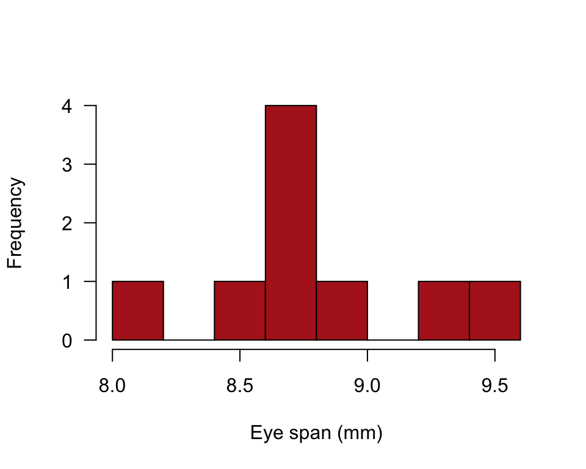
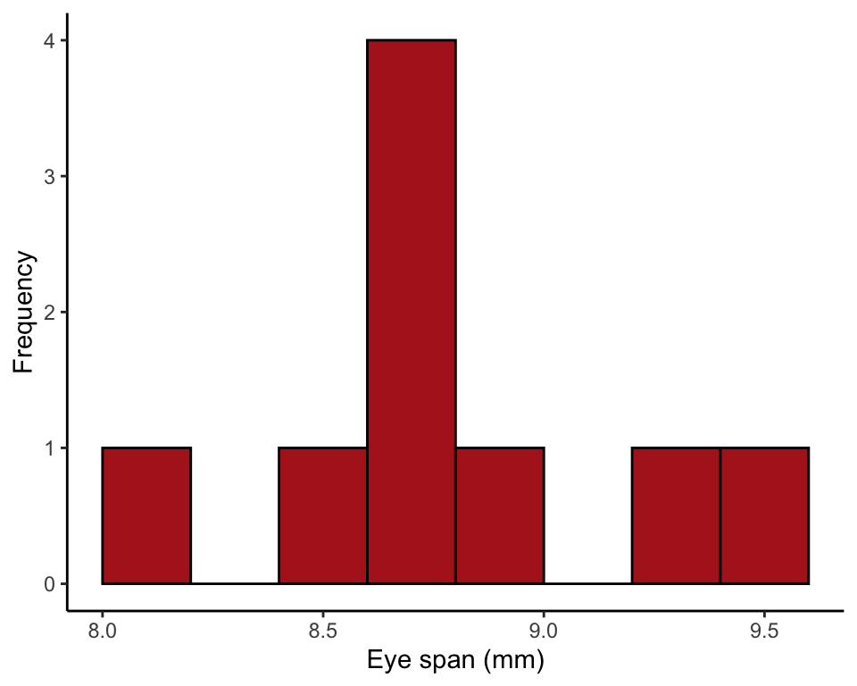
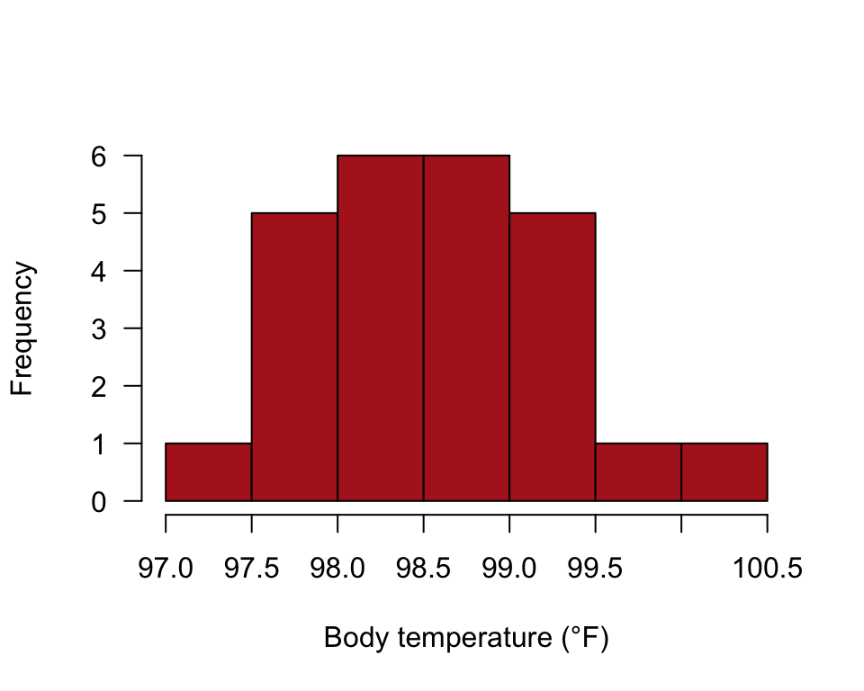
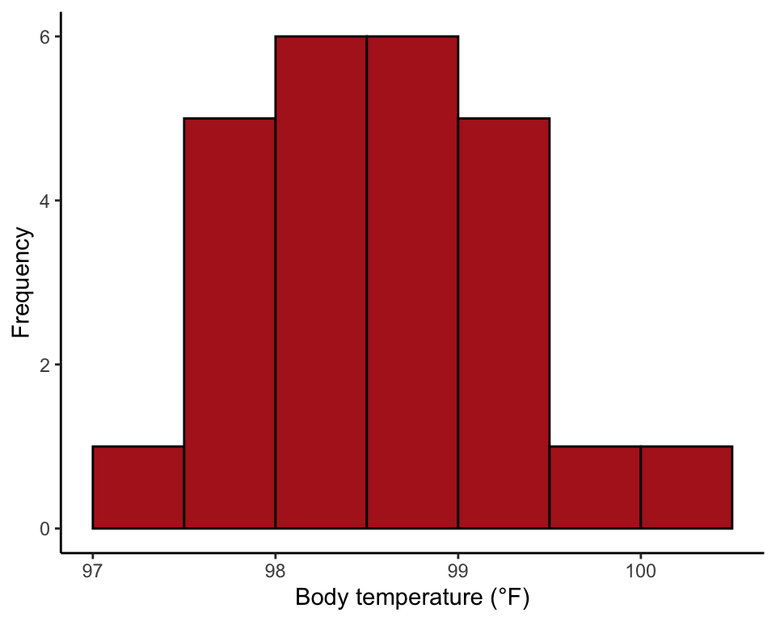

R code for example in Chapter 11:
Inference for a normal population
We used R to analyze all examples in Chapter 11. We put the code here so that you can too.
Also see our lab on calculating the confidence interval for the mean using R.
Load required packages
We’ll use the ggplot2 add on package to make graphs.
library(ggplot2)New methods on this page
-
One-sample \(t\)-test:
t.test(heat$temperature, mu = 98.6) -
Other new methods:
- Confidence intervals for the variance and the standard deviation.
Example 11.2. Stalk-eyed flies
Confidence intervals for the population mean, variance, and standard deviation using eye span measurements from a sample of stalk-eyed flies.
Read and inspect data
stalkie <- read.csv(url("https://whitlockschluter3e.zoology.ubc.ca/Data/chapter11/chap11e2Stalkies.csv"), stringsAsFactors = FALSE)
stalkie## individual eyespan
## 1 1 8.69
## 2 2 8.15
## 3 3 9.25
## 4 4 9.45
## 5 5 8.96
## 6 6 8.65
## 7 7 8.43
## 8 8 8.79
## 9 9 8.63Histogram
hist(stalkie$eyespan, right = FALSE, col = "firebrick", las = 1,
xlab = "Eye span (mm)", ylab = "Frequency", main = "")
or
ggplot(stalkie, aes(x = eyespan)) +
geom_histogram(fill = "firebrick", col = "black", binwidth = 0.2,
boundary = 0, closed = "left") +
labs(x = "Eye span (mm)", y = "Frequency") +
theme_classic()
95% CI for the mean
Appending $conf.int after the function t.test() causes R to give the 95% confidence interval for the mean.
t.test(stalkie$eyespan)$conf.int## [1] 8.471616 9.083940
## attr(,"conf.level")
## [1] 0.9599% CI for the mean
Adding the argument conf.level = 0.99 changes the confidence level of the confidence interval.
t.test(stalkie$eyespan, conf.level = 0.99)$conf.int## [1] 8.332292 9.223264
## attr(,"conf.level")
## [1] 0.9995% CI for variance
Strangely, base R has no built-in function for the confidence interval of a variance, so must we compute it using the formula in the book:
df <- length(stalkie$eyespan) - 1
varStalkie <- var(stalkie$eyespan)
lower = varStalkie * df / qchisq(0.05/2, df, lower.tail = FALSE)
upper = varStalkie * df / qchisq(1 - 0.05/2, df, lower.tail = FALSE)
c(lower = lower, variance = varStalkie, upper = upper)## lower variance upper
## 0.07238029 0.15864444 0.5822533695% CI for std deviation
Take the square root of the confidence limits for the variance.
c(lower = sqrt(lower), std.dev = sqrt(varStalkie), upper = sqrt(upper))## lower std.dev upper
## 0.2690359 0.3983020 0.7630553Example 11.3. Body temperature
Uses a one-sample t-test to compare body temperature in a random sample of people with the “expected” temperature 98.6 °F.
Read and inspect data
heat <- read.csv(url("https://whitlockschluter3e.zoology.ubc.ca/Data/chapter11/chap11e3Temperature.csv"), stringsAsFactors = FALSE)
head(heat)## individual temperature
## 1 1 98.4
## 2 2 98.6
## 3 3 97.8
## 4 4 98.8
## 5 5 97.9
## 6 6 99.0Histogram
hist(heat$temperature, right = FALSE, breaks = seq(97, 100.5, by = 0.5),
col = "firebrick", las = 1, xlab = "Body temperature (°F)",
ylab = "Frequency", main = "")
or
ggplot(heat, aes(x = temperature)) +
geom_histogram(fill = "firebrick", col = "black", binwidth = 0.5,
boundary = 97, closed = "left") +
xlim(97, 100.5) +
labs(x = "Body temperature (°F)", y = "Frequency") +
theme_classic()
One-sample t-test
Calculate using the R command t.test(). Use the argument mu = to set the parameter value stated in the null hypothesis.
t.test(heat$temperature, mu = 98.6)##
## One Sample t-test
##
## data: heat$temperature
## t = -0.56065, df = 24, p-value = 0.5802
## alternative hypothesis: true mean is not equal to 98.6
## 95 percent confidence interval:
## 98.24422 98.80378
## sample estimates:
## mean of x
## 98.524